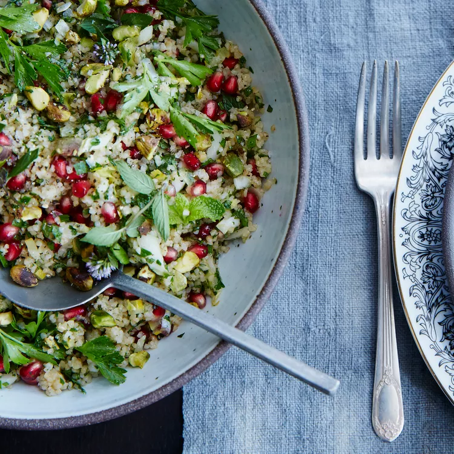

Bulgur and Pomegranate salad

Recommended for health conscious but hungry af moments
Moderately quick fresh and colorful salad.
ingredients
- 1 1/2 cup medium-grind Bulgur
- 1 Pomegranate
- Feta cheese
- Red onion
- Parsley
- 3 Tbsp Lemon and 1 tsp lemon zest
- 2 Tbsp honey
- 1 garlic clove minced
- pinch of ground cinnamon
- 1 1/4 cup virgin olive oil
- fine sea salt
- pepper
- 1 cup parsley chopped(plus more for garnish)
- 1/2 cup mint chopped(plus more for garnish)
- 3 Tbsp pistachios chopped
instructions
- Soak burgul in water for about an hour then filter water (no need to cook in water).
- Over a bowl, to catch juice, open pomegranate.
- In a small bowl combine the lemon juice, honey, garlic, cinnamon and pomegranate juice.
- Constantly whisking, drizzle olive oil until emulsified. Season with salt and pepper.
- In a medium bowl, combine the bulgur, parsley, mint and pomegranate seeds.
- Add the dressing and toss to evenly coat. Season with salt and pepper.
- Transfer the salad to a platter and top with the pistachios. Garnish with parsley and mint.